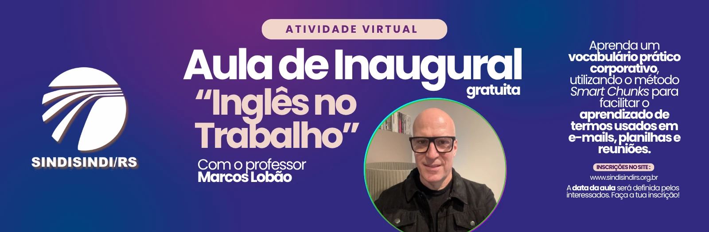

Institucional
SINDISINDI/RS: 37 anos de história
Uma trajetória construída com organização, representatividade e compromisso coletivo.
Leia mais →SINDISINDI/RS · Desde 1989 · Rio Grande do Sul
Aqui você encontra seus direitos, os acordos coletivos, os convênios e todo o apoio do sindicato, de forma simples e direta. Qualquer dúvida, é só chamar: a gente está do seu lado.
Serviços mais buscados
Escolha o assunto e vá direto ao que importa. Se não achar, use a busca no topo ou fale com a gente.
O que o SINDISINDI/RS faz por você
Há 37 anos, defendendo quem trabalha nas entidades sindicais e órgãos de classe do Rio Grande do Sul.
Acordos como os do CPERS, CUT/RS e SENGE/RS mostram a força de negociar unidos.
Informações claras sobre homologações e o encerramento do vínculo de trabalho.
Parcerias em saúde e lazer, como odontologia e a Colônia de Férias.
Cursos e atividades para você crescer na carreira, como o Inglês no Trabalho.
Atenção à saúde mental e à NR-1, com pesquisa e informação para a categoria.
e-Sindicatário, notícias e cartilhas para você saber o que acontece e o que é seu por direito.
Representação e mobilização em defesa da igualdade e de ambientes de trabalho livres de violência.
WhatsApp, telefone e sede em Porto Alegre. Pessoas de verdade para te ouvir.
Quem somos
Desde 1989, o SINDISINDI/RS representa trabalhadores e trabalhadoras de sindicatos, federações, confederações, centrais sindicais e conselhos profissionais em todo o Rio Grande do Sul.
Atuamos para fortalecer a categoria, defender direitos e ampliar o acesso à informação e à organização coletiva.
Notícias e informação
Acompanhe atividades, mobilizações e informações do SINDISINDI/RS.
Institucional
Uma trajetória construída com organização, representatividade e compromisso coletivo.
Leia mais →Saúde no trabalho
Conteúdos sobre saúde no trabalho, NR-1 e instrumentos coletivos.
Leia mais →
Formação
Conheça a iniciativa de formação e desenvolvimento para os trabalhadores.
Leia mais →Fale com o sindicato
Entre em contato para tirar dúvidas, buscar orientação ou conhecer melhor a atuação do SINDISINDI/RS.